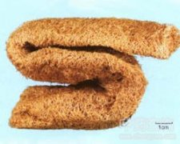

丝瓜络

拼音
Sī Guā Luò
别名
丝瓜网（《医林纂要》），丝瓜壳（《分类草药性》），瓜络、絮瓜瓤（《广州植物志》），天罗线（《药材资料汇编》），丝瓜筋（《江苏植药志》），丝瓜瓤（《河北药材》），千层楼（《湖南药物志》）。
来源
本品为葫芦科植物丝瓜Luffa cylindrica （L.）Roem. 的干燥成熟果实的维管束。夏、秋二季果实成熟、果皮变黄、内部干枯时采摘，除去外皮及果肉，洗净，晒干，除去种子。
生境分布
丝瓜络全国各地均产，以浙江、江苏所产者质量为好。丝瓜布主产广东。
药材特点
植物形态详"丝瓜"条。
性状
本品为丝状维管束交织而成，多呈长棱形或长圆筒形，略弯曲，长30～70cm，直径7～10cm。表面淡黄白色。体轻，质韧，有弹性，不能折断。横切面可见子房3室，呈空洞状。气微，味淡。
性味
甘，平。
功能主治
通络，活血，祛风。用于痹痛拘挛，胸胁胀痛，乳汁不通。
用法用量
4.5～9g。
化学成分
丝瓜络含木聚糖及纤维素，可能还含甘露聚糖、半乳聚糖及木质素等。
药理作用
1：对肝脏作用：所含齐墩果时酸对大鼠肝脏由四氯化碳引起的急性损伤有治疗作用：能减轻肝细胞浆空心变性、疏松变性、肝细胞坏死及小叶变性反应
2：其它作用：齐墩果叶酸有强心利尿作用以及抑制S一180瘤株的生长
摘录
《中国药典》